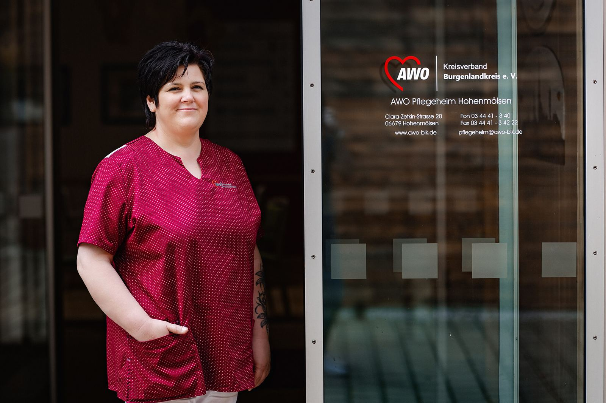
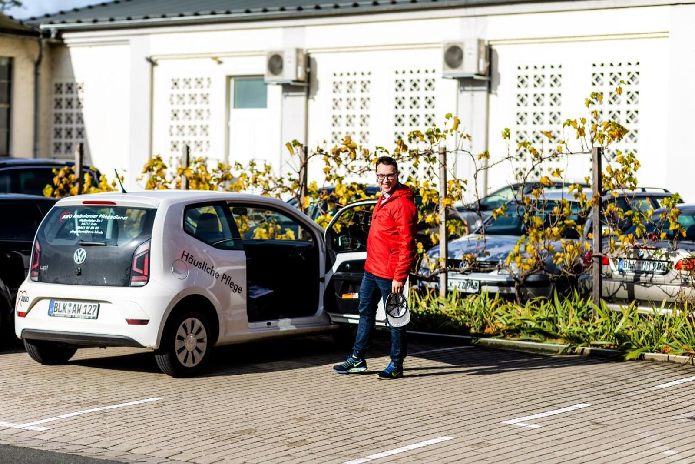

Pflege mit Wunschdienstplan.
Im Burgenlandkreis.
Die AWO sucht Pflegefachkräfte und Auszubildende in Hohenmölsen, Zeitz und Naumburg.
Offene Stellen
Über uns
Die AWO ist seit 1990 im Burgenlandkreis zu Hause. Sie arbeiten stationär, in der Tagespflege oder ambulant auf Tour, in einem Team, das Ihren Dienstplan nach Ihren Wünschen schreibt.
- Urlaub
- 30 Tage
- Gehalt
- Erhöhung jedes Jahr
- Sonderzahlung
- jährlich
- Altersvorsorge
- betrieblich
- Massagen
- kostenlos
- Dokumentation
- digital
Offene Stellen
- Pflegefachkraft (m/w/d) ansehen Hohenmölsen · Alten- und Pflegeheim
- Pflegefachkraft (m/w/d) ansehen Zeitz · Ambulanter Pflegedienst
- Pflegefachkraft (m/w/d) ansehen Naumburg · Seniorenzentrum „Am Rosengarten“
- Ausbildung Pflegefachkraft (m/w/d) ansehen Naumburg · Start 1. August, mit Übernahmegarantie
Das Team
Fotos aus dem Alten- und Pflegeheim Hohenmölsen. So sieht ein ganz normaler Dienst bei uns aus.



Arbeitsorte
 HohenmölsenAlten- und Pflegeheim, 80 Plätze
HohenmölsenAlten- und Pflegeheim, 80 Plätze
ZeitzAmbulanter Pflegedienst und Tagespflege NaumburgSeniorenzentrum „Am Rosengarten“
NaumburgSeniorenzentrum „Am Rosengarten“
Fragen
-
Nein. Für den ersten Schritt reichen Name, Telefonnummer und Ihre Qualifikation. Zeugnisse bringen Sie zum Gespräch mit.
-
Innerhalb von 24 Stunden ruft die Leitung der Einrichtung zurück. Dienstzeiten und Gehalt klären Sie direkt am Telefon.
-
Ja. Berufserfahrung ist erwünscht, aber nicht zwingend. Voraussetzung für die Fachkraftstellen ist das Examen in der Alten- oder Krankenpflege.
-
Ja, betriebliche Entwicklungs- und Fortbildungsmöglichkeiten gehören dazu. Wer bei uns ausbildet, hat eine Übernahmegarantie.
Kontakt
Nichts Passendes dabei oder lieber erst reden? Rufen Sie Frau Witt in der Geschäftsstelle in Hohenmölsen an.
034441 44530